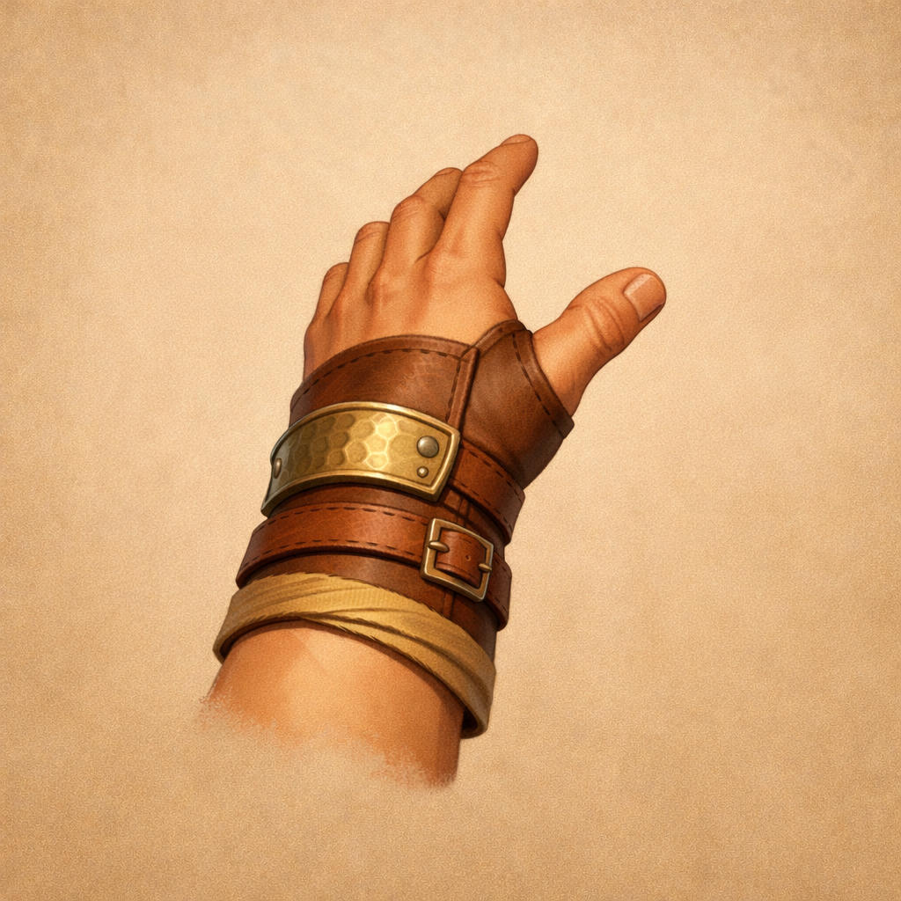

concept-01
Faithful Isolated Extraction
Using the provided approved parent concept as the visual source of truth, create a single isolated fantasy RPG prop concept for a first person right hand forearm. Preserve the approved style, materials, and silhouette language from the source image while extracting only this one asset onto a plain background. This child asset represents the right-hand member of the parent concept. Keep the object centered, non-overlapping, and fully readable for downstream 3D generation. Materials should read as stylized skin, leather wraps, cloth accents, simple forged metal details. Style constraints: readable first-person silhouette, game-friendly detail, no ornate overload, not photoreal, clear wrist and forearm shapes for future rigging. Intended use: Isolated right hand and forearm candidate derived from approved paired hands concept for aesthetic and proportion mesh exploration.